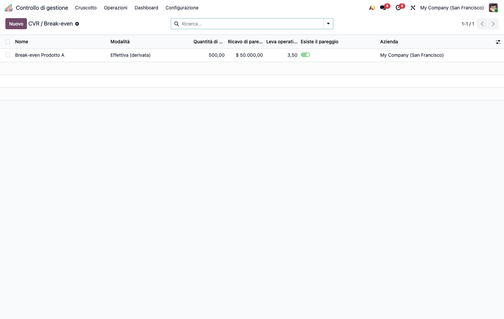
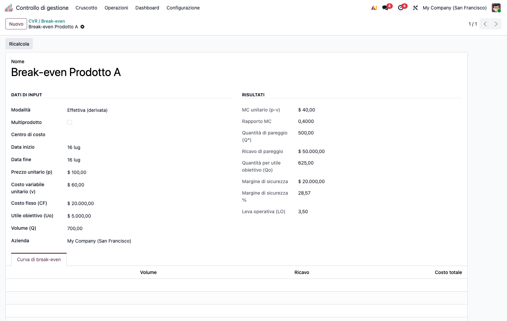

<section class="oe_container">
<div class="oe_row oe_spaced">
<div class="oe_span12">
<h1>CMC – Direct Costing &amp; Decisioni (cmc_direct_costing)</h1>
<p>Modulo capillare della suite CMC. Dipende da <code>cmc_base</code>.</p>
<h2>Obiettivo</h2>
<p>Strato <strong>decisionale</strong> basato sul margine di contribuzione (direct costing):</p>
<ul><li><strong>Direct costing</strong> semplice ed evoluto: margine di contribuzione lordo e semilordo per linea/prodotto.</li><li><strong>CVR / break-even</strong>: punto di pareggio, utile obiettivo, margine di sicurezza,</li></ul>
<p><strong>leva operativa</strong>. Modalità <em>consuntivo</em> (costi fissi dai gruppi di costo) o <em>simulazione</em>.</p>
<ul><li><strong>Analisi differenziale</strong>: wizard make-or-buy, eliminazione linea, sostituzione prodotto, con verdetto live.</li></ul>
<p></p>
<h2>Configurazione (step-by-step)</h2>
<ol><li>Installa <code>cmc_direct_costing</code> (richiede <code>cmc_base</code>).</li><li>Nessuna anagrafica dedicata obbligatoria: i dati si inseriscono nelle analisi. Per la modalità <em>consuntivo</em> servono costi registrati in <code>cmc_base</code> (i costi fissi sono derivati dai gruppi di costo).</li></ol>
<h2>Utilizzo (step-by-step)</h2>
<h3>Direct costing (margine di contribuzione)</h3>
<ol><li><strong>Analisi e decisioni › Direct costing e decisioni › Direct costing (MC)</strong> → <strong>Nuovo</strong>.</li><li>Aggiungi le righe (prodotto/linea): ricavo, costo variabile, costo fisso specifico.</li><li>Imposta il costo fisso comune. Il sistema calcola MC lordo/semilordo e risultato.</li></ol>
<h3>CVR / break-even</h3>
<ol><li><strong>Analisi e decisioni › Direct costing e decisioni › CVR / punto di pareggio</strong> → <strong>Nuovo</strong>.</li></ol>
<p></p>
<ol><li>Inserisci prezzo unitario, costo variabile unitario, costi fissi, volume e (opzionale) utile obiettivo.</li><li>Il record calcola break-even (quantità e fatturato), margine di sicurezza, leva operativa e la curva di pareggio. Se MC ≤ 0 il break-even è disattivato (guardia).</li></ol>
<h3>Analisi differenziale (make-or-buy)</h3>
<ol><li><strong>Analisi e decisioni › Direct costing e decisioni › Decisioni</strong> → <strong>Nuovo</strong>.</li><li>Scegli lo scenario (produrre/acquistare, eliminare linea, sostituire) e compila i costi rilevanti. Il <strong>verdetto</strong> si aggiorna in tempo reale.</li></ol>
<h2>Note</h2>
<ul><li>CVR consuntivo: i costi fissi arrivano da <code>_cmc_cost_groups</code>; simulazione: campi editabili.</li><li>Termini consolidati in inglese lasciati tali (CVR, break-even, make-or-buy).</li></ul>
</div>
</div>
</section>
